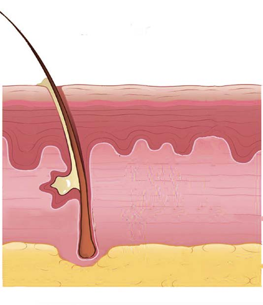

Caring for the nose
The nose is cared by:
- (a) Cleaning your nose using clean water; and
- (b) Not inserting objects into your nose.
The skin
The skin is a sense organ that covers the whole body of animals, including human beings. Its function is to feel or sense different conditions, such as heat, cold, touch, texture, pressure, pain and vibrations. The skin has three major layers which are upper layer or epidermis, middle layer or dermis and inner layer or fat layer. The skin consists of other components such as hair. Figure 8 shows the parts of the skin. The skin receives signals and sends information to the brain for interpretation.

Hair
Upper layer
Middle layer
Inner layer
Figure 8: Parts of the skin